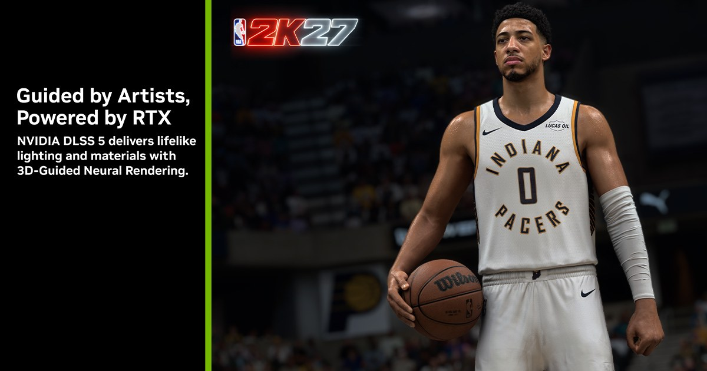

DLSS 5：3D-Guided Neural Rendering 將材質與光照納入可控神經渲染
NVIDIA 公布 DLSS 5 的 3D-Guided Neural Rendering，讓開發者以場景幾何與引擎資料引導神經渲染，並提供藝術控制項調整材質、光照與最終視覺。

Engine AI ★★★★★
完整分析
渲染流程變化
DLSS 5 不再只把 AI 放在升頻或補幀階段，而是把 3D 場景資訊納入神經渲染，使引擎提供的幾何與畫面資料直接參與最終材質與光照重建。
製作價值
重點是畫質提升能否在目標平台以可接受成本穩定重現。
平台實測
固定場景比較畫質、GPU/CPU、記憶體、scalability 與 fallback。